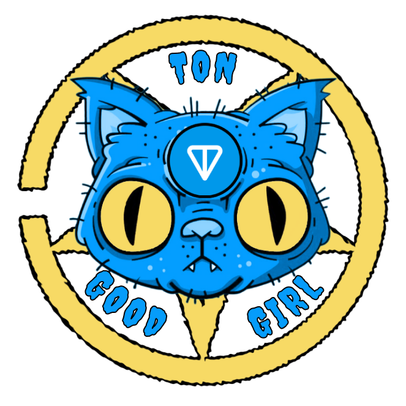
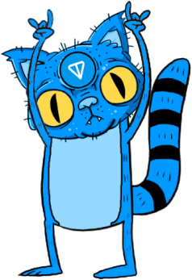
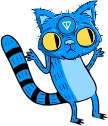

born in Base
Ms. Cat Pickles
Ms. Cat Pickles
is the sibling of
Mr. Pickles
, a character from an American adult animated horror comedy series created by Will Carsola and Dave Stewart for
Adult Swim
.
CAT PICKLES 101

SOCIAL CHANNELS
• 95% LP
• 5% Marketing
T
0
K
E
N
OMIC 
C
S